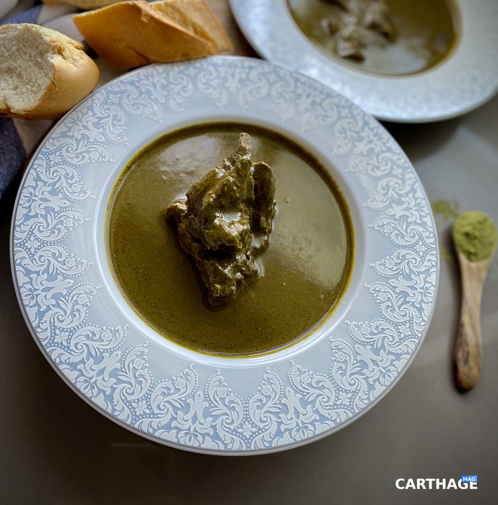

Mloukhia

What is Mloukhia ?
Mloukhia is a traditional dish that belongs to
many North African and Middle Eastern countries.
Each country has it is own way of cooking it.
The Tunisian way is VERY different than the other
methods. We eat it with bread here as opposed to rice.
Mloukhia comes from the leaves of the Nalta jute plant.
In Tunisia, these leaves are dried then ground very finely.
This powder is stored in jars and used when cooking Moloukhia.
Ingredients
- 1/2 cup olive oil
- 6 tbsp Mloukhia
- 1 medium onion
- 4 cloves of garlic
- 4 pieces of meat (lamb or beef – I used lamb)
- 1 tbsp tomato paste
- 2 tsp turmeric
- 1 tsp chili flakes
- 1 tsp coriander & caraway
- Salt & pepper
- 2 sage leaves
Steps
- Heat some water in a saucepan or in your kettle. Set aside.
- In a medium pot without the heat turned on, add the olive oil and
the Mloukhia powder. Mix well until combined. Slowly start adding
the hot water while mixing. It will become gelatinous but don’t
worry, it will break down with cooking. Once you added a good amount
of the hot water and the Mloukhia relatively broke down, put the pot
on medium/low heat and keep stirring. Cover with a lid and stir
every 10 min.
- In the meantime, season the meat. I used lamb for this recipe.
Place your meat in a bowl and add the chopped onions, garlic,
tomato paste, olive oil, chili flakes, turmeric, coriander & caraway
, salt & pepper. Mix well! Set aside
- Once the Mloukhia has been simmering for 2 hrs, add the meat.
Cover and let simmer again for another 2 hrs.
- Add the sage leaves and uncover the pot for the last 20-30 min of
cooking so that the oil floats on top and the consistency of the
sauce becomes a little thick.
- Spoon in shallow bowls and serve with hot bread.